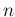

WendzelNNTPd is a tiny but easy to use Usenet server (NNTP server) for Linux, *nix and BSD. The server is written in C. For security reasons, it is compiled with stack smashing protection by default, if your compiler supports that feature.
WendzelNNTPd uses the GPLv3 license.
WendzelNNTPd contains a database abstraction layer. Currently supported database systems are SQlite3 and MySQL. New databases can be easily added.
WendzelNNTPd contains different security features, the most important features are probably Access Control Lists (ACLs) and the Role Based Access Control (RBAC) system. ACL and RBAC are described in a own chapter. WendzelNNTPd was probably the first Usenet server with support for RBAC.
Another feature are so-called “invisible newsgroups”: If access control is activated, a user without permission to access the newsgroup will not be able to see the existence of the newsgroup. In case he knows about the existence of the newsgroup nevertheless, he will not be able to post to or read from the newsgroup.
However, please note that the salting for password hashing is using SHA-256, but with a global user-definable salt that is concatenated with the username and password, rendering it less secure than using unique random hashes per password. Also, WendzelNNTPd does not support TLS (not even SSL)!
In case a user sends a post to two equal newsgroups within one post command's “Newsgroups:” header tag, the server will add it only once to save memory on the server and the time of the readers.
WendzelNNTPd supports IPv6. The server can listen on multiple IP addresses as well as multiple ports.
WendzelNNTPd does not implement all NNTP commands, but the (most) important ones. Another problem is that the regular expression library used is not 100% compatible with the NNTP matching in commands like “XGTITLE”. A 3rd aspect is that WendzelNNTPd cannot share messages with other NNTP servers. Finally, WendzelNNTPd lacks support for encrypted connections.
See the “CONTRIBUTE” file in the tarball.
The project started in 2004 under the name Xyria:cdpNNTPd, as part of the Xyria project that also contained a fast DNS server, called Xyria:DNSd. In 2007, I renamed it to WendzelNNTPd and stopped development of Xyria:DNSd. Version 1.0.0 was released in 2007, version 2.0.0 in 2011. Since then I have primarily fixed reported bugs and added minor features to keep the software alive, which is also planned for the next ten years. A detailed history can be found in the “HISTORY” file in the tarball.
This chapter provides a guide on how to install WendzelNNTPd 2.x.
To install WendzelNNTPd from source you need to download the provided archive file (e.g. wendzelnntpd-2.0.0.tar.gz) file.![[*]](footnote.png) Extract it and run ./configure. Please note that configure indicates missing libraries and packages that you may first need to install using the package system of your operating system.
Extract it and run ./configure. Please note that configure indicates missing libraries and packages that you may first need to install using the package system of your operating system.
$ tar -xzf wendzelnntpd-2.0.0.tgz $ cd wendzelnntpd $ ./configure ...
Please Note: If you wish to compile WITHOUT MySQL or WITHOUT SQlite support, then run MYSQL=NO ./configure or SQLITE=NO ./configure, respectively.
Please Note: For FreeBSD/OpenBSD/NetBSD/*BSD: There is no MySQL support; you need to use SQLite (i.e. run MYSQL=NO ./configure). Run configure as well as make in the bash shell (under some BSDs you first need to install bash).
After configure has finished, run make:
$ make ...
To install WendzelNNTPd on your system, you need superuser access. Run make install to install it to the default location /usr/local/*.
$ sudo make install
Please Note (Upgrades): Run sudo make upgrade instead of sudo make install for an upgrade. Please cf. Section ![[*]](crossref.png) .
.
Please Note (MySQL): If you plan to run MySQL, then no database was set up during 'make install'. Please refer to chapter 3 (configuration) to learn how to generate the MySQL database.
There is a init script in the directory scripts/startup. It uses the usual parameters like “start”, “stop” and “restart”.
A user reported WendzelNNTPd-2.0.0 is installable under Mac OS X 10.5.8. The only necessary change was to add the flag “-arch x86_64” to compile the code on a 64 bit system. However, I never tried to compile WendzelNNTPd on a Mac.
Not supported.
This chapter will explain how to configure WendzelNNTPd after installation.
Note: The configuration file for WendzelNNTPd is named /usr/local/etc/wendzelnntpd.conf. The format of the configuration file should be self-describing and the default config file includes many comments which will help you to understand the lines you can see and modify there.
Note: On *nix-like operating systems the default installation path is /usr/local/* what means that the configuration file of WendzelNNTPd will be /usr/local/etc/wendzelnntpd.conf, and the binaries will be placed in /usr/local/sbin.
The first and most important step is to choose a database engine. You can use either SQLite3 (what is the default case and easy to use, but not suitable for larger systems with many thousand postings) or MySQL (which is of course the better solution, but also a little bit more complicated to realize). By default, WendzelNNTPd is configured for SQLite3 and is ready to run. If you want to keep this setting, you do not have to read this section.
In the configuration file you will find a line called database-engine. You can choose to use either MySQL or SQLite as the backend storage system by appending either sqlite or mysql.
database-engine mysql
If you choose to use MySQL then you will also need to specify the user and password which WendzelNNTPd should use to connect to the MySQL server. If your server does not run on localhost or uses a non-default MySQL port then you will have to modify these values too.
; Your database hostname (not needed for sqlite3) database-server 127.0.0.1 ; the database connection port (not needed for sqlite3) ; Comment out to use the default port of your database engine database-port 3306 ; Server authentication (not needed for sqlite3) database-username mysqluser database-password supercoolpass
Once you have chosen your database backend you will need to create the database and the required tables.
If you chose SQLite as your database backend then you can skip this step as running make install does this for you.
Note: The SQLite database file as well as the posting management files will be stored in /var/spool/news/wendzelnntpd/.
For MySQL, a SQL script file is included called mysql_db_struct.sql. It creates the WendzelNNTPd database as well as all the needed tables. Use the MySQL console tool to execute the script.
$ cd /path/to/your/extracted/wendzelnntpd-archive/ $ mysql -u YOUR-USER -p Enter password: Welcome to the MySQL monitor. Commands end with ; or \g. Your MySQL connection id is 48 Server version: 5.1.37-1ubuntu5.1 (Ubuntu) Type 'help;' or '\h' for help. Type '\c' to clear the current input statement. mysql> source mysql\_db\_struct.sql ... mysql> quit Bye
Now you should specify the IP addresse(s) (IPv4 or IPv6) for WendzelNNTPd to accept connections on and the TCP port (the default NNTP port is 119) to run on.
; You have to specify the port _before_ using the 'listen' command! port 119 ; network addresses to listen on listen 127.0.0.1 listen ::1 listen 192.168.0.1
You could also use different ports for each IP address by placing a port command right before each listen command but this is not recommended.
To change the maximum size of a post to be sent to the server, change the variable max-size-of-postings. The value must be set in Bytes and the default value is 20971520 (20 MBytes).
max-size-of-postings 20971520
If you have any problems running WendzelNNTPd or if you simply want more information about what is happening, you can uncomment the verbose-mode line.
; Uncomment 'verbose-mode' if you want to find errors or if you ; have problems with the logging subsystem. All log strings are ; written to stderr too, if verbose-mode is set. Additionally all ; commands sent by clients are written to stderr too (but not to ; logfile) verbose-mode
Please note that WendzelNNTPd does not support SSL/TLS!
WendzelNNTPd contains an extensive access control subsystem. If you want to only allow authenticated users access to the server, you should uncomment use-authentication. This gives every authenticated user access to each newsgroup.
; Activate authentication use-authentication
If you need a slightly more advanced authentication system, you can activate Access Control Lists (ACL) by uncommenting use-acl. This activates the support for Role-based ACL too.
; If you activated authentication, you can also activate access ; control lists (ACL) use-acl
By default, WendzelNNTPd makes a user's hostname or IP address part of new message-IDs when a user sends a post using the NNTP POST command. If you do not want that, you can force WendzelNNTPd not to do so by uncommenting enable-anonym-mids, which enables anonymized Message-IDs.
; This prevents that IPs or Hostnames will become part of the ; message ID generated by WendzelNNTPd what is the default case. ; Uncomment it to enable this feature. enable-anonym-mids
When uncommenting the keyword hash-salt, the default salt value that is used to enrich the password hashes can be changed. Please note that you have to define the salt before you set-up the first password since it will otherwise be stored as hashed with an old salt, rendering it unusable. For this reason, it is best to define your salt right after running make install.
; This keyword defines a salt to be used in conjunction with the ; passwords to calculate the cryptographic hashes. The salt must ; be in the form [a-zA-Z0-9.:\/-_]+. ; ATTENTION: If you change the salt after passwords have been ; stored, they will be rendered invalid! If you comment out ; hash-salt, then the default hash salt defined in the source ; code will be used. hash-salt 0.hG4//3baA-::_\
WendzelNNTPd applies the SHA-2 hash algorithm using a 256 bit hash value. Please also note that the final hash is calculated using a string that combines salt, username and password as an input to prevent password-identification attacks when an equal password is used by multiple users. However, utilizing the username is less secure than having a completely separate salt for every password.
Once your WendzelNNTPd installation has been configured, you can run the server (in the default case you need superuser access to do that since this is required to bind WendzelNNTPd to the default NNTP port 119) by starting /usr/local/sbin/wendzelnntpd.
$ /usr/local/sbin/wendzelnntpd WendzelNNTPd: version 2.0.7 'Berlin' - (Oct 26 2015 14:10:20 #2544) is ready.
Note (Daemon Mode): If you want to run WendzelNNTPd as a background daemon process on *nix-like operating systems, you should use the parameter -d.
The server can be stopped by killing its process:
$ pkill wendzelnntpd
The server has a handler for the kill signal that allows to safely shutdown using pkill or kill.
To restart the service, kill and start the service.
The script init.d_script in the directory scripts/startup of the tarball can be used to start, restart, and stop WendzelNNTPd. It is a standard init.d script for Linux operating systems that can usually be copied to /etc/init.d (it must be executable).
$ cp scripts/startup/init.d_script /etc/init.d/wendzelnntpd $ chmod +x /etc/init.d/wendzelnntpd
Note: Please note that some operating systems use different directories than /etc/init.d or other startup script formats. In such cases, the script works nevertheless but should simply be installed to /usr/local/sbin instead.
To start, stop, and restart WendzelNNTPd, the following commands can be used afterwards:
$ /etc/init.d/wendzelnntpd start Starting WendzelNNTPd ... done. WendzelNNTPd: version 2.0.7 'Berlin' - (Oct 26 2015 14:10:20 #2544) is ready. $ /etc/init.d/wendzelnntpd restart Stopping WendzelNNTPd ... done. Starting WendzelNNTPd ... done. WendzelNNTPd: version 2.0.7 'Berlin' - (Oct 26 2015 14:10:20 #2544) is ready. $ /etc/init.d/wendzelnntpd stop Stopping WendzelNNTPd ... done.
Use the command line tool wendzelnntpadm to configure user, role and newsgroup settings of your WendzelNNTPd installation. To get an overview of supported commands, run “wendzelnntpadm help”:
$ wendzelnntpadm help usage: wendzelnntpd <command> [parameters] *** Newsgroup Administration: <listgroups> <addgroup | modgroup> <newsgroup> <posting-allowed-flag (y/n)> <delgroup> <newsgroup> *** User Administration: <listusers> <adduser> <username> [<password>] <deluser> <username> *** ACL (Access Control List) Administration: <listacl> <addacluser | delacluser> <username> <newsgroup> <addaclrole | delaclrole> <role> <rolegroupconnect | rolegroupdisconnect> <role> <newsgroup> <roleuserconnect | roleuserdisconnect> <role> <username>
You can either list, create or delete newsgroups using wendzelnntpadm.
$ wendzelnntpadm listgroups Newsgroup, Low-, High-Value, Posting-Flag ----------------------------------------- alt.test 10 1 y mgmt.talk 1 1 y secret.project-x 20 1 y done.
To create a new newsgroup run the following command:
$ wendzelnntpadm addgroup my.cool.group y Newsgroup my.cool.group does not exist. Creating new group. done.
You can also change the “posting allowed” flag of a newsgroup but this takes currently no effect since WendzelNNTPd handles all newsgroups as newsgroups with posting allowed.
$ wendzelnntpadm modgroup my.cool.group y Newsgroup my.cool.group exists: okay. done. $ wendzelnntpadm modgroup my.cool.group n Newsgroup my.cool.group exists: okay. done.
$ wendzelnntpadm delgroup my.cool.group Newsgroup my.cool.group exists: okay. Clearing association class ... done Clearing ACL associations of newsgroup my.cool.group... done Clearing ACL role associations of newsgroup my.cool.group... done Deleting newsgroup my.cool.group itself ... done Cleanup: Deleting postings that do not belong to an existing newsgroup ... done done.
The easiest way to give only some people access to your server is to create user accounts (please make sure you activated authentication in your configuration file). You can add, delete and list all users.
This command always prints the password of the user too.
$ wendzelnntpadm listusers Username, Password ------------------ developer1, wegerhgrhtrthjtzj developer2, erghnrehhnht manager1, wegergergrhth manager2, thnthnrothnht swendzel, lalalegergreg swendzel2, 94j5z5jh5th swendzel3, lalalalala swendzel4, wegwegwegwegweg done.
You can either enter the password as additional parameter (useful for scripts that create users automatically) ...
$ wendzelnntpadm adduser UserName HisPassWord User UserName does currently not exist: okay. done.
... or you can type it using the prompt (in this case the input is shadowed):
$ wendzelnntpadm adduser UserName2 Enter new password for this user (max. 100 chars): User UserName2 does currently not exist: okay. done.
Please Note: A password must include at least 8 characters and may not include more than 100 characters.
$ wendzelnntpadm deluser UserName2 User UserName2 exists: okay. Clearing ACL associations of user UserName2... done Clearing ACL role associations of user UserName2... done Deleting user UserName2 from database ... done done.
Welcome to the advanced part of WendzelNNTPd. WendzelNNTPd includes a powerful role based access control system. You can either only use normal access control lists where you can configure which user will have access to which newsgroup. Or you can use the advanced role system: You can add users to roles (e.g. the user “boss99” to the role “management”) and give a role access to a group (e.g. role “management” shall have access to “discuss.management”).
Note: Please note that you must activate the ACL feature in your configuration file to use it.
Note: To see *ALL* data related to the ACL subsystem of your WendzelNNTPd installation, simply use “wendzelnntpadm listacl”.
WendzelNNTPd includes a feature called “Invisible Newsgroups” which means that a user without access to a newsgroup will neither see the newsgroup in the list of newsgroups, nor will he be able to post to such a newsgroup or will be able to read it.
We should start with the simple access control where you can define which user should have access to which newsgroup.
$ wendzelnntpadm addacluser swendzel alt.test User swendzel exists: okay. Newsgroup alt.test exists: okay. done. $ wendzelnntpadm listacl List of roles in database: Roles ----- Connections between users and roles: Role, User ---------- Username, Has access to group ----------------------------- swendzel, alt.test Role, Has access to group ------------------------- done.
$ wendzelnntpadm delacluser swendzel alt.test User swendzel exists: okay. Newsgroup alt.test exists: okay. done.
If you have many users, some of them should have access to the same newsgroup (e.g. the developers of a new system should have access to the development newsgroup of the system). With roles you do not have to give every user explicit access to such a group. Instead you add the users to a role and give the role access to the group. (One advantage is that you can easily give the complete role access to another group with only one command instead of adding each of its users to the list of people who have access to the new group).
In the following examples, we give the users “developer1”, “developer2”, and “developer3” access to the development role of “project-x” and connect their role to the newsgroups “project-x.discussion” and “project-x.support”. To do so, we create the three users and the two newsgroups first:
$ wendzelnntpadm adduser developer1 Enter new password for this user (max. 100 chars): User developer1 does currently not exist: okay. done. $ wendzelnntpadm adduser developer2 Enter new password for this user (max. 100 chars): User developer2 does currently not exist: okay. done. $ wendzelnntpadm adduser developer3 Enter new password for this user (max. 100 chars): User developer3 does currently not exist: okay. done. $ wendzelnntpadm addgroup project-x.discussion y Newsgroup project-x.discussion does not exist. Creating new group. done. $ wendzelnntpadm addgroup project-x.support y Newsgroup project-x.support does not exist. Creating new group. done.
Before you can add users to a role and before you can connect a role to a newsgroup, you have to create a role (you have to choose an ASCII name for it). In this example, the group is called “project-x”.
$ wendzelnntpadm addaclrole project-x Role project-x does not exists: okay. done.
You can delete a role by using “delaclrole” instead of “addaclrole” like in the example above.
To add (connect) or remove (disconnect) a user to/from a role, you need to use the admin tool too.
The second parameter (“project-x”) is the role name and the third parameter (“developer1”) is the username. Here we add our 3 developer users from the example above to the group project-x:
$ wendzelnntpadm roleuserconnect project-x developer1 Role project-x exists: okay. User developer1 exists: okay. Connecting role project-x with user developer1 ... done done. $ wendzelnntpadm roleuserconnect project-x developer2 Role project-x exists: okay. User developer2 exists: okay. Connecting role project-x with user developer2 ... done done. $ wendzelnntpadm roleuserconnect project-x developer3 Role project-x exists: okay. User developer3 exists: okay. Connecting role project-x with user developer3 ... done done.
$ wendzelnntpadm roleuserdisconnect project-x developer1 Role project-x exists: okay. User developer1 exists: okay. Dis-Connecting role project-x from user developer1 ... done done.
Even if a role is connected with a set of users, it is still useless until you connect the role with a newsgroup.
To connect a role with a newsgroup, we have to use the command line tool for a last time (the 2nd parameter is the role, and the 3rd parameter is the name of the newsgroup). Here we connect our “project-x” role to the two newsgroups “project-x.discussion” and “project-x.support”:
$ wendzelnntpadm rolegroupconnect project-x project-x.discussion Role project-x exists: okay. Newsgroup project-x.discussion exists: okay. Connecting role project-x with newsgroup project-x.discussion ... done done. $ wendzelnntpadm rolegroupconnect project-x project-x.support Role project-x exists: okay. Newsgroup project-x.support exists: okay. Connecting role project-x with newsgroup project-x.support ... done done.
This is done like in the example above but you have to use the command “rolegroupdisconnect” instead of “rolegroupconnect”.
Like mentioned before, you can use the command “listacl” to list your whole ACL configuration (except the list of users that will be listed by the command “listusers”).
$ wendzelnntpadm listacl List of roles in database: Roles ----- project-x Connections between users and roles: Role, User ---------- project-x, developer1 project-x, developer2 project-x, developer3 Username, Has access to group ----------------------------- swendzel, alt.test Role, Has access to group ------------------------- project-x, project-x.discussion project-x, project-x.support done.
As mentioned above, you as the maintainer of the usenet server can safe time by using roles. If you add a new developer to the system, and the developer should have access to the two groups “project-x.discussion” and “project-x.support”, you do not have to assign the user to both (or even more) groups. Instead, you just add the user to the role “project-x” that is already connected to both groups.
If you want to give all developers access to the group “project-x.news”, you also do not have to connect every developer with the project. Instead, you just connect the rule with the newsgroup, what is one command instead of  commands. Of course, this time saving concept also works if you want to delete a user.
Besides the already mentioned authentication, ACL and RBAC features, the security of the server can be improved by putting WendzelNNTPd in a chroot environment or letting it run under an unprivileged user account (the user then needs write access to /var/spool/news/wendzelnntpd and read access to (/usr/local)/etc/wendzelnntpd.conf). An unprivileged user under Unix-like systems is also not able to create a listen socket on the default NNTP port (119) since all ports up to 1023 are reserved. This means that the server should use a port >= 1024 if it is started by a non-root user. Note: Some Unix systems may have another privileged port configuration.
Please also note that WendzelNNTPd can be easily identified due to its welcoming `banner' (desired code `200' message of NNTP). Tools such as nmap provide rules to identify WendzelNNTPd and its version this way. Theoretically, this could be changed by a slight code modification (welcome message, HELP output and other components that make the server identifiable). However, I do not recommend this as it is just a form of `security by obscurity'.
Same as upgrading from v.2.0.x to v.2.0.y, see Section .
Please follow the upgrade instructions for upgrading from 2.0.x to 2.0.y below. However, once you use cryptographic hashes in your wendzelnntpd.conf, your previous passwords will not work anymore, i.e. you need to reset all passwords or deactivate the hashing feature.
Stop WendzelNNTPd if it is currently running. Install WendzelNNTPd as described but run make upgrade instead of make install. Afterwards, start WendzelNNTPd again.
Acknowledgement: I would like to thank Ann from Href.com for helping a lot with finding out how to upgrade from 1.4.x to 2.0.x!
An upgrade from version 1.4.x was not foreseen due to the limited available time I have for the development. However, here is a dirty hack:
Under Ubuntu they all come as packages:
$ sudo apt-get install libmysqlclient-dev libsqlite3-dev flex bison sqlite3
Under CentOS they come as packages as well:
$ sudo yum install make gcc bison flex sqlite-devel
Other operating systems should provide the same or similar packages/ports.
Run MYSQL=NO ./configure, followed by make, and sudo make install. This will compile, build and install WendzelNNTPd without MySQL support as you only rely on SQLite3 from v.1.4.x (and it would be significantly more difficult to bring the SQLite database content to a MySQL database).
database-engine sqlite3
The following step is a very dirty hack but I hope it works for you. It is not 100% perfect as important table columns are then still of the type 'STRING' instead of the type 'TEXT'!
Load the sqlite3 tool with your replaced database file:
$ sudo sqlite3 /var/spool/news/wendzelnntpd/usenet.db
This will open the new file in editing mode. We now add the tables which are not part of v.1.4.x to your existing database file. Therefore enter the following commands:
CREATE TABLE roles (role TEXT PRIMARY KEY); CREATE TABLE users2roles (username TEXT, role TEXT, PRIMARY KEY(username, role)); CREATE TABLE acl_users (username TEXT, ng TEXT, PRIMARY KEY(username, ng)); CREATE TABLE acl_roles (role TEXT, ng TEXT, PRIMARY KEY(role, ng)); .quit
You will probably see no post bodies right now if posts are requested by your client. Therefore, switch into /var/spool/news/wendzelnntpd and run (as superuser) this command, it will replace the broken trailings with corrected ones:
$ cd /var/spool/news/wendzelnntpd
$ for filn in `/bin/ls cdp*`; do echo $filn; cat $filn | \
sed 's/\.\r/.\r\n/' > new; num=`wc -l new| \
awk '{$minone=$1-1; print $minone}'` ; \
head -n $num new > $filn; done
$
First check, whether the database file is accepted at all:
$ sudo wendzelnntpadm listgroups
It should list all your newsgroups
$ sudo wendzelnntpadm listusers
It should list all existing users. Accordingly
$ sudo wendzelnntpadm listacl
should list all access control entries (which will be empty right now but if no error message appears, the related tables are now part of your database file!).
Now start WendzelNNTPd via sudo wendzelnntpd and try to connect with a NNTP client to your WendzelNNTPd and then try reading posts, sending new posts and replying to these posts.
If this works, you can now run v2.x on 32bit and 64bit Linux :) Congrats, you made it and chances are you are the second user who did that. Let me know via e-mail if it worked for you.
This document was generated using the LaTeX2HTML translator Version 2018 (Released Feb 1, 2018)
Copyright © 1993, 1994, 1995, 1996,
Nikos Drakos,
Computer Based Learning Unit, University of Leeds.
Copyright © 1997, 1998, 1999,
Ross Moore,
Mathematics Department, Macquarie University, Sydney.
The command line arguments were:
latex2html -show_section_numbers -local_icons -split 2 docs.tex
The translation was initiated on 2021-04-17